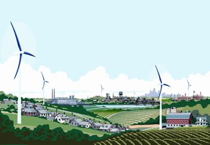
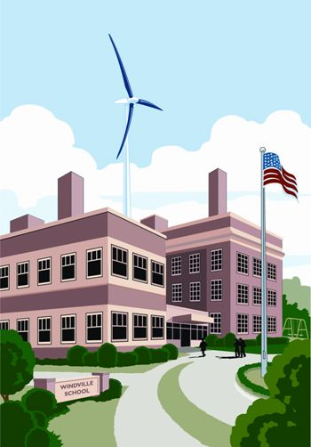
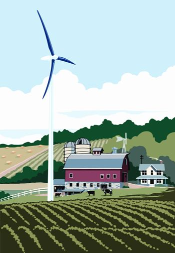
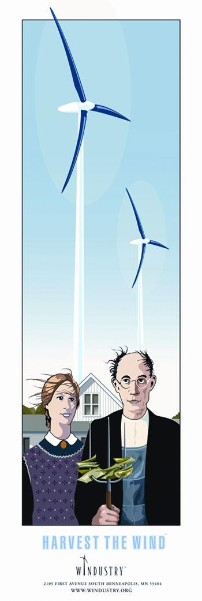
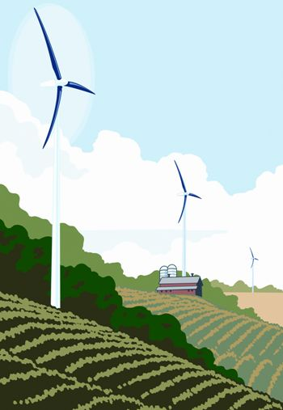

Perhaps you’d like to have a wind turbine in your back yard, but for one reason or another, your property just isn’t a good location. Don’t despair, because someone else in your community might have an excellent site to put one or more turbines, where the wind always seems to blow. And if you can attract enough support from area residents, you may be able to install a medium to large-scale, locally owned wind turbine project that can benefit everyone in the community. Impossible? Not at all. In fact, this strategy has been used successfully for many years in Europe and is the foundation of the Danish wind industry, long recognized as a world leader in wind energy.
During the OPEC (Organization of Petroleum Exporting Countries) oil embargo and subsequent oil crises of the 1970s, there was a flurry of wind turbine activity in the United States and some significant advances were made in the technology. But in the early 1980s, when the Reagan administration dismantled the energy tax credits and incentives that had encouraged the installation of renewable energy systems nationwide, the U.S. wind power industry collapsed.
Denmark, on the other hand, understood the incredible long-term potential for wind power. In 1980, a newly elected government offered a 30 percent subsidy for the construction of new wind energy projects, and after a 20-year partnership between government and industry, more than 100,000 households (nearly 5 percent of the population) own one or more shares in a nearby turbine.
What most Americans don’t know is that the vast majority of wind installations in Denmark were composed of small groups or clusters of mid-sized turbines, not the huge wind farms found in the United States. And these Danish wind turbines were operated by farmers, homeowners and small businesses, either independently or, more frequently, as cooperative ventures. There were three key components to the Danish wind initiative:
These requirements removed the biggest hurdles to developing the wind industry in Denmark. As a result, the initiative was spectacularly successful for many years. This same cooperative strategy also can be found in other northern European countries, especially Germany, the Netherlands, Sweden and, more recently, the United Kingdom. Communities in these countries have clearly shown that medium to large-sized wind turbines can be used to power farms, homes and businesses at a scale between the individual homeowner installation and large commercial wind farms.
The experience of community wind in Denmark and Germany is particularly instructive. Not only are the wind turbines, or clusters of turbines, distributed across the landscape, the ownership is spread across hundreds of thousands of individual participants. A quarter of the wind generating capacity in Denmark has been developed by windmill guilds (or vindmølleaug) roughly equivalent to what would be called cooperatives in North America. And in Germany, as much as one-third of the nation’s wind capacity has been built by associations of local landowners and residents, also known as Bürgerbeteiligung. Individual German investors have installed as much as 4,000 megawatts of wind-generating capacity, an investment of over $4.8 billion. About 200,000 people in Germany own shares of a local wind turbine.
There are numerous examples of successful community wind projects in Denmark, but perhaps the most famous Danish cooperative of all is Middelgrunden. Located on a shoal about 2 kilometers outside of Copenhagen Harbor, the Middelgrunden wind farm is comprised of 20 wind turbines. Ten of the turbines are owned by the Middelgrunden Wind Turbine Cooperative, while the remaining 10 are owned by Copenhagen Energy, the local municipal electric company. The relationship between the cooperative and the electric company proved to be helpful throughout the planning, approval and construction phases of the project. The wind farm provides enough electricity for more than 40,000 households in Copenhagen.
This model offers a lot of possibilities in North America, especially for communities that are trying to provide energy security in an era of increasingly uncertain supplies and higher prices. Yet there have been problems in transplanting this concept across the Atlantic Ocean.
“The potential for community wind is huge, but there are many obstacles in North America,” says wind guru Paul Gipe. “Utilities everywhere resist this, and virtually everything is stacked against you. The first problem is that you often can’t connect to the grid. Even if you can connect, you can’t get paid. And even if you can get paid, you can’t get paid enough. Other than that, there are the typical problems that you have with any development, such as financing, siting issues, zoning approvals and so on.”
Despite these many challenges, community wind has a lot going for it. Unlike traditional, large-scale power plants, wind energy is modular, meaning that each wind turbine is a self-contained power plant that can be sized and located with much more flexibility. Wind turbines can be grouped in large clusters or dispersed widely across the landscape.
This advantage alone should be sufficient justification for pursuing the co-op model, but community wind projects offer yet another advantage: According to a number of studies, they retain a greater amount of income in the local area, substantially increasing the economic benefits for the community over projects owned by out-of-area corporate developers - possibly as much as three to four times more. Farmers and area residents have the opportunity to build, own, operate and profit from their own renewable energy systems.
Community wind projects can be owned individually, cooperatively or collectively through a variety of legal mechanisms. Community wind legal structures can include limited liability corporations (LLCs), cooperatives, school districts, municipal utilities, other municipal entities or various combinations of these.
The best structure for any particular project depends on a wide range of variables as well as federal, state and local laws and regulations. If one strategy doesn’t work, another might. The key is to find the right structure for your particular project. What these strategies all have in common is some form of community ownership and group benefit. The main point is to identify the project as belonging to the community, which may avoid (or at least minimize) the usual conflicts between local residents and developers, whose large-scale, commercial proposals are often viewed as primarily benefiting absentee owners.
Lisa Daniels, executive director and founder of Windustry, a Minnesota-based nonprofit organization working to create an understanding of wind energy opportunities for rural communities, is enthusiastic about the potential for locally owned wind projects. “In this country, most wind turbines have been set up by developers from outside of the community,” she says. “So, most of the time rural landowners are leasing their land to external wind developers for an annual royalty. But those wind projects start to look a lot better when they are in smaller clusters and when there is local ownership of those clusters, which keeps more money circulating in the local economy.”
Of all the examples of locally based wind projects in North America that follow a cooperative model, one of the best is probably Toronto’s WindShare. The turbine, which stands 94 meters (308 feet) high, is located on the Lake Ontario waterfront. The $1.6 million, 750-kilowatt turbine started turning in early 2003 and produces enough electricity every year to power about 250 homes. WindShare, in a 50/50 partnership with Toronto Hydro, owns the turbine and the power it generates. The co-op and Toronto Hydro share equal responsibility for development, capital costs, operation, maintenance and all other agreements related to the project. WindShare currently has 427 members.
The co-op model has been a major reason for the project’s success, according to Stewart Russell, former WindShare vice president. “It’s really brought a lot of people together, and I don’t think the project would have had the same support without the co-op; we would have been just another commercial entity building something on the lakeshore,” he says.
In the United States, there are a growing number of successful community wind projects as well. Of all states, Minnesota has led the way in promoting and supporting locally owned wind projects. In 2000, a group of farmers in Luverne, Minn., developed a plan for farmer-owned wind turbines that would take advantage of state policies favoring local wind development. The group finally settled on forming two limited liability companies, Minwind I and Minwind II. This legal structure was the best option because it maximized the companies’ ability to use tax credits and other incentives, while maintaining some principles of cooperatives such as voluntary and open membership, democratic member control and concern for the greater community.
The two companies were formed to take advantage of a Minnesota renewable production incentive that provided a payment of 1.5 cents per kilowatt hour for wind projects up to 2 megawatts for the first 10 years of production. Seventy percent of the total $3.5 million cost of the project was financed by a local bank. The remaining 30 percent was equity-financed. Investors from the region surprised many observers when they quickly snapped up all the available stock (at $5,000 per share) for the $1.1 million equity share in both companies in just 12 days.
Both groups relied heavily on expertise from consultants to develop the actual wind project and negotiate the power-purchase agreement, and on a team of lawyers to determine the business structure. The biggest obstacle was negotiating the power-purchase agreement with a utility that would buy the wind-generated electricity at a fair price. Eventually, after months of negotiation, the wind farm promoters entered into a 15-year contract with Alliant Energy, which uses the power to satisfy renewable energy standards in other states.
“The key reason why Minwind was such a success was that they were able to organize their community around the power contract, and bring their community investment into it to make it work,” says Dan Juhl, of Woodstock, Minn., who played a significant role in developing the project.
Minwind I and II were so successful that, after a lot of hard work, Minwind Energy dedicated Minwind III-IX, seven new 1.65-megawatt wind turbines, on Dec. 3, 2004.
OK, if community supported wind is such a great idea, why aren’t there more successful examples in North America? Unfortunately, in the absence of a coherent national energy policy, the rules and regulations governing community wind (and other local renewable energy) projects vary considerably from state to state, making it difficult to offer a simple, one-size-fits-all approach for success.
In most states, there’s a regulatory environment and approval process that does virtually nothing to encourage these types of projects. For the most part, community wind isn’t even on the radar screen of most regulators, and the high cost of the approval process (often $100,000 to $500,000 or more in zoning approval charges, permitting fees and other miscellaneous costs) halts most community based initiatives before they even get started. Plus, federal energy production tax credits (PTC) for wind farms favor large-scale corporate projects that are beyond the means of local communities.
However, one of the best regulatory models in North America at the present time is the new Standard Offer Contracts in Ontario, Canada. Announced early in 2006, this could be a historic step toward a sustainable energy future. Standard Offer Contracts allow homeowners, landowners, farmers, cooperatives, schools, municipalities and others to install renewable energy projects of up to 10 megawatts, and sell the power to the grid for a fixed price for 20 years. The Ontario Standard Offer Contracts provide a model that other provinces and states should consider when developing their own renewable energy laws and regulations.
Admittedly, economies of scale tend to favor larger projects, and getting a community wind initiative up and running can be a lot of hard work that requires a good deal of persistence. Nevertheless, there are thousands of examples of successful community wind projects around the world that clearly demonstrate that the extra effort is worth it.
Community supported wind is an idea whose time has definitely arrived, and I am convinced that if this strategy were to be adopted across the nation, it could fundamentally alter the entire debate about most wind (and other local renewable energy) proposals. Many cities and towns in the country have the potential for one or more community supported wind projects. Perhaps you can start one in your community.
Ontario Sustainable Energy Association; A provincial, nonprofit umbrella organization formed to implement community sustainable energy projects across Ontario, Canada. Its Web site lists workshops, publications and other educational materials.
Windustry; One of the best and most informative wind power sites that promotes wind energy through outreach, educational materials, and technical assistance to rural landowners, local communities and utilities, and state, regional and nonprofit collaborations.
Wind-Works; One of the most comprehensive wind power sites. Be sure to check out “Co-op Wind” (under “Articles”) which contains a wealth of information and advice from wind guru Paul Gipe and many others on community and cooperative wind projects.
|
 MARK HERMAN Get together with members of the community, and make wind work for everyone! |
 MARK HERMAN School districts can serve as the legal owner of a local wind project. |
 MARK HERMAN Farmers in Minnesota took advantage of renewable energy tax credits to develop wind power. |
|
 MARK HERMAN Read more about community and rural wind power at Windustry.org. |
 MARK HERMAN Know of a good site nearby for a wind turbine? Start a community wind project! |
|